РАЗГРУЗКА - 3
Сразу иллюстрация недели - нарисована, правда, порядка ста лет назад. Чарльз Гибсон, специалист по хорошеньким эмансипе, вдруг дает такого Смарта, что мама дорогая. Вся соль в контрастах – но об этом надо будет как-нибудь отдельно.
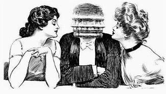
И еще из старья: Cartoonbrew, замечательный блог об анимации 50-х .
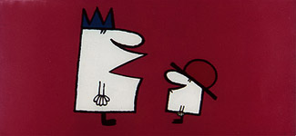
Laurie Proud
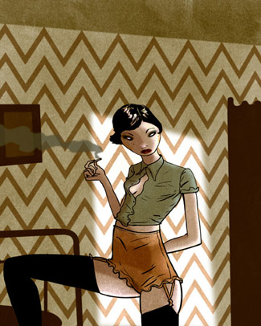
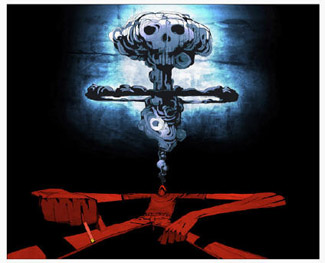
Scott Bakal, серия «я и дьявол» в память о Роберте Джонсоне, напечатана тиражом в 666 экземпляров.
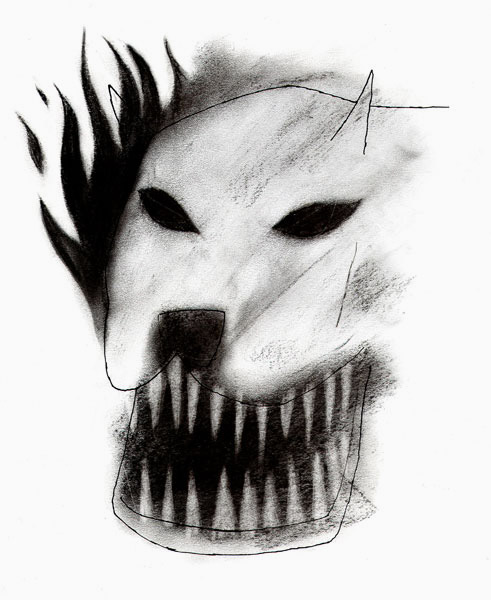
Сочетание техник хорошая вещь, если уметь. Опять фокус в контрастах: чем сильнее разница между ними, тем чище обе звенят. Еще к вопросу о деталях:
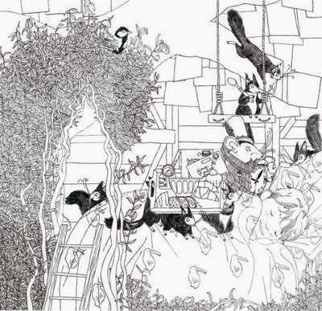
И еще к вопросу о деталях, Paul Madonna, all over coffee. А также к вопросу о том, как художник умеет застопориться на чем-то одном и все равно всех убрать. И это, заметьте, регулярный комикс.
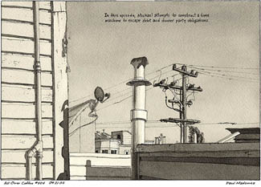
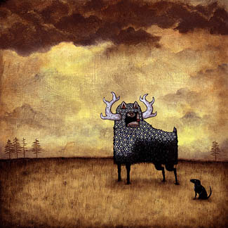
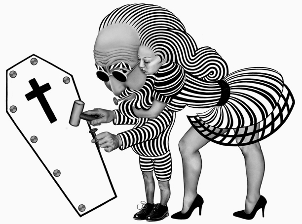
– остальное скучнее.
Greg Hill – замечательно, насколько цифровое портфолио хуже масляного.
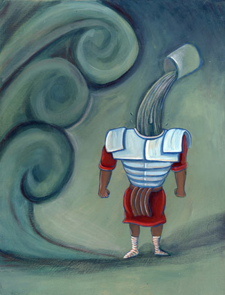
Michael Wandelmaier, добрый вариант Хануки
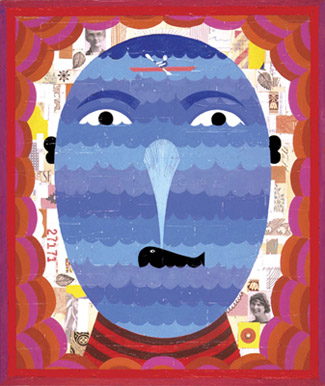
Новаторский подход к композиции, или «как сделать иллюстрацию из странички в молескине». Правильный ответ: Никак.
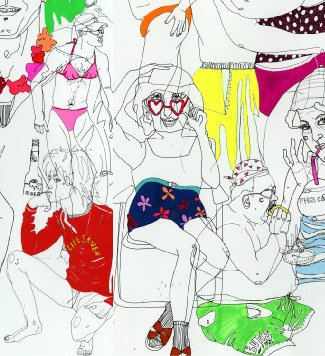
Justin DeGarmo, местами прям новый Ботеро
Olaf Hajek, вдруг не было
Следующий эфир 28го числа. Рисуйте все время.